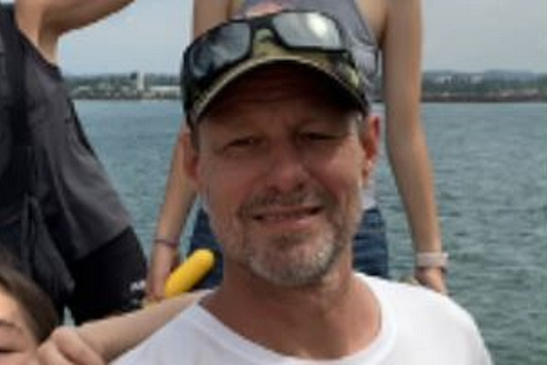
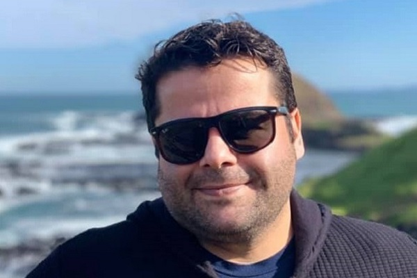
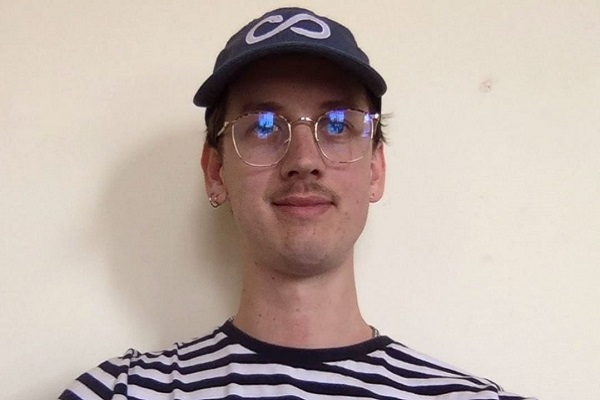

Individual Career Plans
Rob Harris

Ten weeks into the Introduction to IT and I have not changed my view on my career moving forward, if anything it’s made me realise the job and career I have today is very rewarding.
The reality of having to change industries or career path is daunting and not something I really want to subject myself to. I’m at a stage in my life where learning is more for myself rather than leading to a change in direction.
What I have learnt so far has been used in work meeting, enabling me to be more confident in questioning the technology aspects of the processes. Even so, the job I selected in the first place was hypothetical and not something that I was ever going to pursue.
Ahmet Polat

Ahmet wants to specialise in Machine Learning and Data Science fields. In addition to taking courses from RMIT, he is also taking further courses to improve his knowledge in various fields of IT on other online education programs like Google IT automation with Python. Even though cybersecurity also started catching his interest, he will probably be leaning on Machine learning rather than shifting to cybersecurity. However, he believes the importance of improving his knowledge in various fields to become successful in IT fields.
The courses he took so far enabled him to be able to write code in object-oriented programming languages, broaden his knowledge in It, improve his problem-solving skills and learn to design efficient User interfaces for mobile application.
He believes that following completion of this degree and obtaining the certificates that he is pursuing; he will be able to have a rewarding career.
In the first meeting we agreed a couple of changes to our group processes, outlined in the team profile. In addition, we agreed we would maintain our two meetings a week at the same
times agreed for Assignment 2 (why change this given we were relatively successful with the delivery of A2). John took over the chair role which has worked well through-out A3.
It would be fair to say that they communication and through-put within these meetings has been significantly more succinct. A comparison of meeting times between A2 and A3 would be reduced dramatically.
John Wilkins
For Assignment 2, our process of having organised meetings, and assigning people to different parts of the project worked well for efficiency. We originally tried a less formal approach for Assignment 3,
but found that it caused a lack of focus. So we went back to assigning people to specific sections. In addition, our regularly scheduled meetings have helped keep a consistent pace on the work and make sure everyone has kept on track.
My ideal job, that of a small business owner, has not changed as a result of previous research on it. The only real barrier, as I understand the concept, is the starting capital, and to earn enough of that is my career plan:
To that end, any profession that I qualify for is as good as any other, inasmuch as it is gainfully paid. This is in stark contrast to all other At-Us group members, who mostly seek fulfilling ongoing positions specifically
in the Information Technology industry.
I am of the opinion that, if one can obtain a fulfilling occupation, then that is a positive outcome. But on a societal or statistical scale, it is unrealistic to expect to. For myself, I don’t want to necessarily take pride in my job.
I want to do my job, and take pride in my life. I seek a different kind of fulfillment in the freedom of not being beholden to irrational and archaic demands made without my consent and outside of my control.
Jack Sharples

Throughout Introduction to IT and looking at many different subjects Jack has taken a keen interest in the IoT and how they can all communicate together. In particular, he has sparked interest in
its application to horticulture and its ability to create a dynamic environment to tend to a plants needs to increase yield.
While this is a change from being a Software developer, both roles can complement each other. Although as he learns more about different fields Jack is still open to perusing different IT pathways.
Luke Harding Smith
Luke has developed a keen interest for Hardware support and Cyber Security during his current studies and employment, whilst also being intrigued in Robotics and Automation, but would also like to maintain a general knowledge of all fields and would be more than happy in a career that involves and he contributes to all fields, instead of specializing. Luke see’s a future for himself assisting with secure, automated and innovative designs and technologies in far more advanced industry (of IT/ICT) and world. Much of his studies so far have been for the soul purpose of career progression and the expansion of his knowledge base and understanding in the various fields of Information Technology. As Luke continues to overthink things, he changes his future goals and aspirations like the weather in Melbourne, and he also sees himself pursuing careers in his hobbies and interests.
Thi Tuong Bui (Bibianna)
Tuong is aspired to change her career path to IT related fields. To achieve this goal, she identified the importance of the knowledge, relevant skills and experience she will need to acquire, and the challenges that must be overcome to contribute to the long-term interests. While her career plan stays constant since the beginning, she will need to immerse in more IT related jobs to equip herself with the real-world experiences so that she can be more confident in applying for her ideal job. Ultimately, she hopes to apply her knowledge and harvested experience to do something meaningful to the society, especially the pet industry.
Career Plan Comparison
Everyone in the group reflected on their potential future career having complete most of this course. Four members of the team have not changed their future career choice. This being said it’s fair to say that each has no doubt learnt about different aspects of IT and enjoyed many aspects and would be open to a change in the future.
Ahmet is steadfast in his desire to specialise in Machine Learning and Data Science fields, however, is now considering what the cybersecurity field has to offer.
Ahmet is keen to learn further about what IT has to offer and has shown a natural affinity for tools he has learnt about and has become quite proficient, so we suspect that whatever he chooses he will make a great success of it.
Jack on the other hand still wants to use IT to enable him to work with plants, while he suggests a change in field from software developer to something related to the Internet of Things,
he is still open to what he will learn and will surely find the right fit as he progresses through his learning journey.
Rob is open to what the future may bring, while he is not overtly looking to change careers, what he has learnt has sparked several interests that he will purse, e.g playing with a Raspberry Pi.
He is most likely to stay in the corporate world using his people experiences to lead technology professionals rather than go into a specialized field.
John wants to “take pride in [my] his life”, he sees himself running his own business, in order to do this he needs to raise the capital to buy in. He sees an IT job as a means to this end.
It’s not something he wants to conform to but understands that in order to reach his goal he needs the money to do it.
Bibianna originally listed software programming as her initital job preference and while this is still current, this course has opened her mind to other avenues. She is still looking to change her current career and move into IT related field.
Luke changes his mind like the Melbourne weather, he is currently in a hardware support role, however has taken a keen interest in cyber security and lists automation and robotics as areas that intrigue him. By the time he finishes his degree he will have cycled through many other It fields, some that haven’t been invented. Being the “brainchild” behind DriveEase the sky is the limit.
Each person has a different reason for doing the course and as they progress their eyes will be opened to new possibilities.